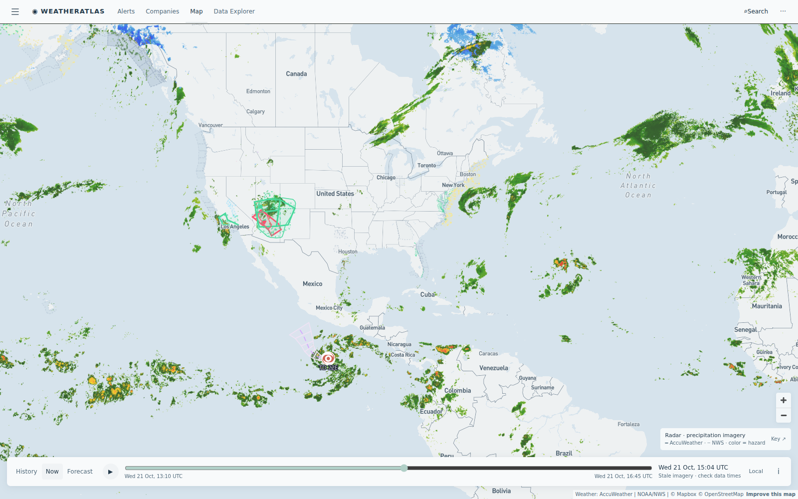

Daily severe-weather intelligence for LNG, refining, offshore, and terminal operators.

Live radar + active alert board from the AccuWeather-powered Atlas — captured ~15:00 UTC today.
| System / region | Status | Energy-asset impact |
|---|---|---|
| California October storm — first significant rain of the season | FLOOD WATCH | A strong Pacific storm brings up to 2 inches of rain to Southern California and the San Joaquin Valley. A Flood Watch covers the Kern County oil belt — Belridge, Cymric, Lost Hills, Midway-Sunset, Elk Hills — plus coastal refining (El Segundo) and LA-area terminals. First rain runs off parched, oily ground fast: pad runoff controls, slick lease roads, tanker delays, and marine-terminal weather delays. |
| Hurricane TD 22E — East Pacific (98 mph, Cat 2) | HURRICANE | Category-2 hurricane strengthens off the southern Mexico coast (near 9.5°N, 99.3°W). Salina Cruz / Gulf of Tehuantepec port ops and Mexico-bound tankers watch for track confirmation; no US Gulf threat. Combined with Middle East export recovery, energy headlines tilt supply-heavy today. |
| San Juan basin flash-flood flags — Colorado/New Mexico gas belt | SEVERE WX | AccuWeather severe-weather flash-flood flags stay live on Doe Canyon, Ignacio Blanco, and McElmo gas fields for a second night — haul roads and completions face stand-down windows; minor shut-in risk on Rockies gas volumes. |
| Champi (58 mph) & Agueda — Philippine Sea / SW Indian basin | FADING / WATCH | Severe Tropical Storm Champi keeps weakening in the Philippine Sea — Asia–Pacific LNG lane risk keeps easing. New Tropical Depression Agueda spins in the SW Indian basin well from East African LNG corridors; early-stage watch only. |
Today's gap comes from the Kern County oil belt, where the season's first storm arrives tonight. AccuWeather's enterprise feed shows rain from the first hour of the window, peaking at a 67% chance mid-evening. The free feed tops out near 13% for the same hours — it still reads as a mostly-dry night.
Season's first storm arrives tonight: AccuWeather shows rain in the first hour of the window peaking near 67%, while the free feed tops out near 13% — the gap is the story. Flood Watch live; pad runoff controls and slick lease roads on tap.
View live brief →Storm arrives next: AccuWeather shows rain entering the 12-hour window (up to 37%) while the free feed stays at 1-2%. First rain at a coastal refinery means slick docks, storm-water controls, and closing visibility windows at the crude berths.
View live brief →